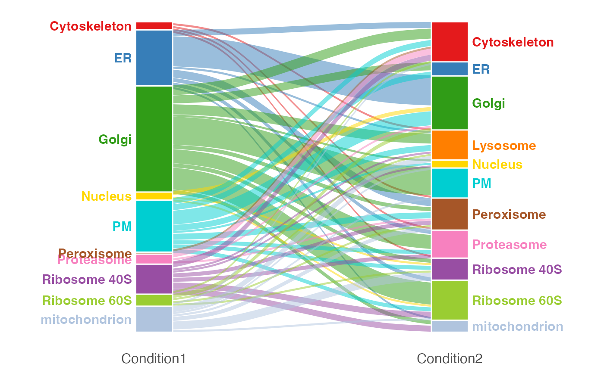
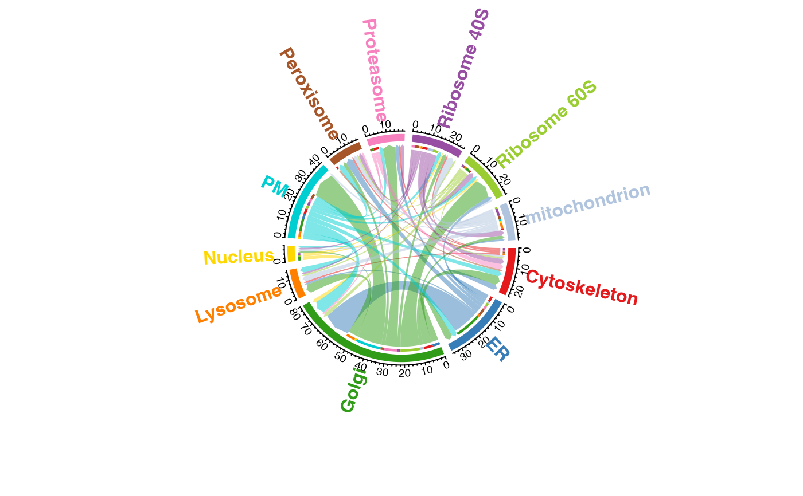

R/bandle-plots.R
bandle-plots-translocations.RdProduces a chord diagram (circos plot) or an alluvial plot (also known as a Sankey diagram) to show changes in location between two conditions or datasets.
plotTranslocations(
params,
type = "alluvial",
all = FALSE,
fcol,
col,
labels = TRUE,
labels.par = "adj",
cex = 1,
spacer = 4,
...
)An instance of class bandleParams or an instance of
class MSnSetList of length 2.
A character specifying the type of visualisation to plot.
One of "alluvial" (default) or "chord".
A logical specifying whether to count all proteins or only show
those that have changed in location between conditions. Default is
FALSE.
If params is a list of MSnSets. Then
fcol must be defined. This is a character vector of length 2
to set different labels for each dataset. If only one label is specified,
and the character is of length 1 then this single label will be
used to identify the annotation column in both datasets.
A list of colours to define the classes in the data. If not
defined then the default pRoloc colours in getStockCol() are
used.
Logical indicating whether to display class/organelle labels
for the chord segments or alluvial stratum. Default is TRUE.
If type is "alluvial". Label style can be
specified as one of "adj", "repel". Default is "adj".
Text size. Default is 1.
A numeric. Default is 4. Controls the white space around the
circos plotting region.
Additional arguments passed to the chordDiagram function.
Returns a directional circos/chord diagram showing the translocation
of proteins between conditions. If type = "alluvial" ouput is a
ggplot object.
## Generate some example data
library("pRolocdata")
data("tan2009r1")
set.seed(1)
tansim <- sim_dynamic(object = tan2009r1,
numRep = 4L,
numDyn = 100L)
data <- tansim$lopitrep
control <- data[1:2]
treatment <- data[3:4]
## fit GP params
gpParams <- lapply(tansim$lopitrep, function(x)
fitGPmaternPC(x, hyppar = matrix(c(0.5, 1, 100), nrow = 1)))
## run bandle
res <- bandle(objectCond1 = control,
objectCond2 = treatment,
gpParams = gpParams,
fcol = "markers",
numIter = 5L,
burnin = 1L,
thin = 2L,
numChains = 2,
BPPARAM = SerialParam(RNGseed = 1),
seed = 1)
#>
|
| | 0%
|
|============== | 20%
|
|============================ | 40%
|
|========================================== | 60%
|
| | 0%
|
|============== | 20%
|
|============================ | 40%
|
|========================================== | 60%
## Process the results
bandleres <- bandleProcess(res)
## plot the results
plotTranslocations(bandleres)
#> Warning: `spread_()` was deprecated in tidyr 1.2.0.
#> Please use `spread()` instead.
#> This warning is displayed once every 8 hours.
#> Call `lifecycle::last_lifecycle_warnings()` to see where this warning was generated.
#> Warning: The `.dots` argument of `group_by()` is deprecated as of dplyr 1.0.0.
#> This warning is displayed once every 8 hours.
#> Call `lifecycle::last_lifecycle_warnings()` to see where this warning was generated.

plotTranslocations(bandleres, type = "chord")
